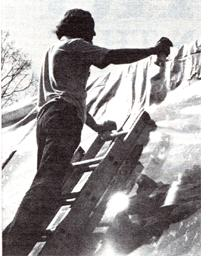

These folks saved plants and cash when they learned to . . .
A year ago last February, when my husband and I began the construction of our attached solar greenhouse, we looked upon our future structure as a means of helping us heat our old Missouri farmhouse and as a permanent home for my numerous houseplants. We never suspected at the time that, come summer, it would turn into an attached solar oven!
During that winter, we sent off for the 12mil woven polyethylene we needed to make the walls of our solar structure. When the package arrived, we found in it a note from the distributor that warned us to be careful to vent our greenhouse properly, so that the space wouldn't overheat during the summer months, shortening both the life of the poly and of whatever plants were inside.
Heeding this good advice, we installed a high vent on the west side and a low one on the east . . . so our region's prevailing easterly winds would blow cool air in and hot air out. We also added a sliding glass door, and installed a wind-driven turbo vent (which my daughters gave me for Mother's Day) in the roof. With all these precautions taken, my husband and I felt that surely our greenhouse was ready for summer. And, since we'd completed the whole project in early spring (while the weather was still chilly), we had a chance to sit back and enjoy the heating benefits of our sun room. Indeed, the addition did help our house stay comfortably cozy . . . and my plants thrived in the sunlight that flooded in.
However, as summer approached and the temperature outside began to rise, the thermometer reading inside our greenhouse started to soar. When it reached a sticky 100°F (before mid-June!), we knew we had a problem, and that we'd better do something about our overheating system quickly . . . before summer really arrived!
Getting right to work, my husband removed the door leading from the greenhouse into our hand-dug cellar and placed a squirrel cage blower on the basement steps. Our hope was that the fan would pull cool air up from under the house, sending it circulating through the plant space and freshening the area. Sure enough, this plan worked . . . for a while. But as soon as hotter weather hit, the interior temperature in our greenhouse zoomed up to a sweltering 110°F, and my already-wilting plants began to burn.
Our next attempt to better ventilate our solar "sauna" was to roll back a 2' X 5' section of the plastic siding and replace it with nylon netting. That way, we thought, the fan driven air would be able to move about even more freely. But-once again-though the arrangement worked fine at first, within a matter of days (all with an abundance of sunshine), the greenhouse became unbearable. Finally, when the temperature rose to a fern frying 120°1· in our solar heater, my husband and I decided it was time to admit defeat and transfer my plants outdoors for the rest of the summer.
BUT JUST THEN . . . Surprisingly enough, the very afternoon I'd resigned myself to hauling out my fainting flora, things took a turn for the better . . . when I noticed my husband busily coating the legs of an old park bench with a can of aluminum spray paint and using a leftover piece of the polyethylene as a drop cloth. Lying there shining in the sunlight, that silver coated plastic looked like the reflective material used by sunbathers and arctic campers. Suddenly, I realized that the answer to our overheating problem was right there in front of us. All we had to do was tack that sun-repellent plastic onto the top of our greenhouse!
No sooner did I mention this idea to my husband than he was off to find a fresh roll of 10' X 50' 4-mil poly, which he cut to size to allow for a 12" overhang . . . and securely tacked to the roof of our solar addition. Then he sprayed it thoroughly with the best-quality aluminum paint he could locate. And less than an hour after our reflective roof was finished, the temperature inside the greenhouse plunged from a sizzling 100°F down to a comfortable 80°F. At last, our plants and polyethylene were saved!
Since creating our sun shield, my spouse and I have checked into commercially manufactured ray-reflecting materials for greenhouses . . . and-I'm pleased to relate-our homemade shade is much less expensive than almost anything you could buy ready-made. In other words, our simple solution to the summertime solar blues was a money saver, to boot!
|
 STAFF PHOTO |
|
|